2026年6月12日更新
第二弾ガチャ「JリーグSP」と「KリーグSP」のおすすめ選手まとめ！唯一性能・新プレイスタイル・金フォメコン適性を画像つきで解説
Ver2.0でJリーグセレクトSP選手スカウトとKリーグセレクトSP選手スカウトのラインナップが一新されました。Jリーグは全100名、Kリーグは全24名。この記事では、全員を横並びで見るのではなく、唯一無二のスキル・特徴、新プレイスタイル、金フォーメーションコンボ適性、ポジション別Best11の4軸でおすすめ候補を整理します。
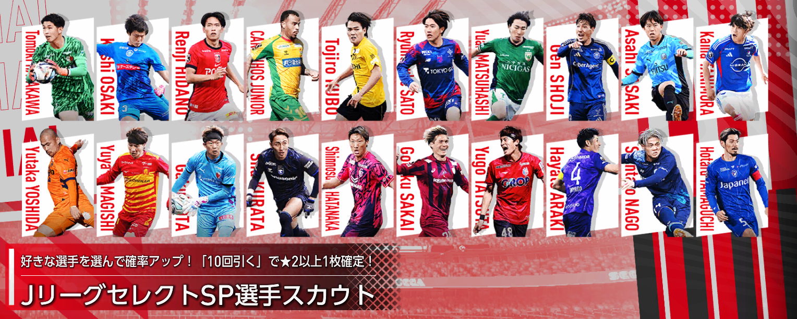
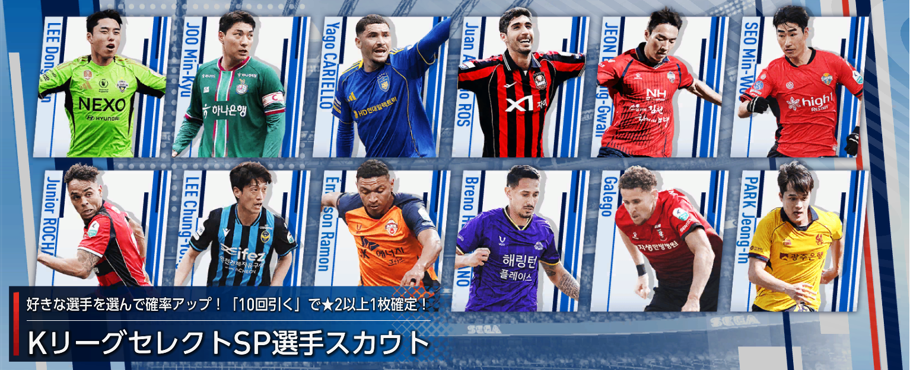
結論：Jリーグは候補が多い。Kリーグはムービング・ポゼッション補強に注目
今回のガチャは、単純な総合力だけで選ぶよりも、自分が使いたい金フォメコンの不足枠を埋められるかで判断した方が失敗しにくいです。
Jリーグ側は、唯一スキルの福田心之助、唯一特徴＋ワイドストライカーの相馬勇紀、リアクション金フォメコン「エンカルナードス'23」に絡む細井響、唯一のクリエイティブFBである本多勇喜など、注目候補がかなり多めです。
Kリーグ側は、ムービング金フォメコン「カナリア軍団'06」に絡むヤコブ・トランジスカとジュリアン・セレスティン、ポゼッション金フォメコン「ブラウ・グラーナ'15」に絡むイ・ヒギュンが特に見どころです。
▼クリックすると該当の項目にジャンプできます
唯一無二の性能を持つおすすめ選手
まず確認したいのは、代用が効きにくい唯一スキル・唯一特徴持ちです。能力値は今後インフレで抜かれても、スキルや特徴は編成価値が残りやすいポイントです。
スキルが唯一無二
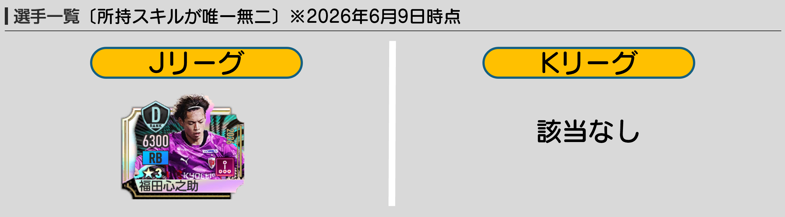
| リーグ | 選手 | ポリシー/ポジション | プレイスタイル | 初期/最大 | 所持スキル | 所持特徴 | 補足 |
|---|---|---|---|---|---|---|---|
| J | 福田心之助 | カウンター / RB | 攻撃的SB | 6077 / 14528 | 打開のドリブル | 無限のアジリティ | 第二弾JリーグSPで唯一の「打開のドリブル」持ち。RB補強とスキル目的の両方で候補。 |
| K | 該当なし | - | - | - | - | - | Kリーグ側は唯一スキル目的では優先度を上げにくい。 |
特徴が唯一無二
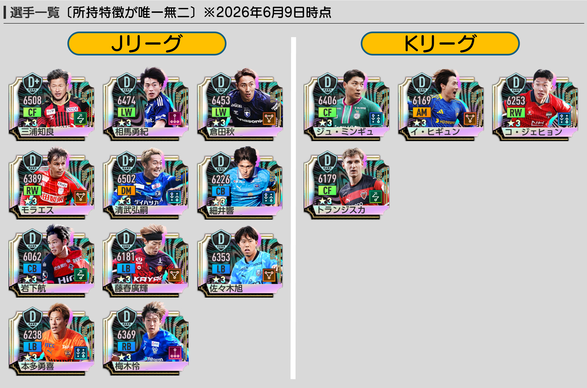
| リーグ | 選手 | ポリシー/ポジション | プレイスタイル | 初期/最大 | 所持スキル | 所持特徴 | 補足 |
|---|---|---|---|---|---|---|---|
| J | 三浦知良 | ムービング / CF | ラインブレーカー | 6198 / 14695 | 狙いすましたシュート | キングの舞 | 唯一特徴持ち。編成・フォメコン条件と噛み合うかを確認したい。 |
| J | 相馬勇紀 | カウンター / LW | ワイドストライカー | 6267 / 14628 | 切り裂くドリブル | 俊敏なキッカー | 唯一特徴持ち。編成・フォメコン条件と噛み合うかを確認したい。 |
| J | 倉田秋 | ポゼッション / LW | ワイドストライカー | 6156 / 14648 | 切り裂くドリブル | 冷静な突破 | 唯一特徴持ち。編成・フォメコン条件と噛み合うかを確認したい。 |
| J | マテウス・モラエス | ポゼッション / RW | ワイドストライカー | 6131 / 14574 | 切り裂くドリブル | ターゲットマン | 唯一特徴持ち。編成・フォメコン条件と噛み合うかを確認したい。 |
| J | 清武弘嗣 | リアクション / DM | パサー | 6176 / 14690 | ファストフィード | 高性能ロングパサー | 唯一特徴持ち。編成・フォメコン条件と噛み合うかを確認したい。 |
| J | 細井響 | リアクション / CB | 組立CB | 6903 / 14470 | 奮戦のタックル | リスクヘッジロングパサー | 唯一特徴持ち。編成・フォメコン条件と噛み合うかを確認したい。 |
| J | 岩下航 | ムービング / CB | ストッパー | 5813 / 14300 | 鋭角的なタックル | ムービングウィール | 唯一特徴持ち。編成・フォメコン条件と噛み合うかを確認したい。 |
| J | 藤春廣輝 | ポゼッション / LB | 攻撃的SB | 5919 / 14409 | 展開のドリブル | 高速マーカー | 唯一特徴持ち。編成・フォメコン条件と噛み合うかを確認したい。 |
| J | 佐々木旭 | ポゼッション / LB | 守備的SB | 6056 / 14592 | 鋭角的なタックル | スピードクラッシャー | 唯一特徴持ち。編成・フォメコン条件と噛み合うかを確認したい。 |
| J | 本多勇喜 | リアクション / LB | クリエイティブFB | 6060 / 14399 | コントロールフィード | 長短のキック | 唯一特徴持ち。編成・フォメコン条件と噛み合うかを確認したい。 |
| J | 梅木怜 | カウンター / RB | 攻撃的SB | 6091 / 14600 | 展開のドリブル | アジャイルクラッシャー | 唯一特徴持ち。編成・フォメコン条件と噛み合うかを確認したい。 |
| K | ジュ・ミンギュ | リアクション / CF | ポストプレーヤー | 6171 / 14623 | 点で合わせるシュート | 冷静な破壊者 | Kリーグ側の唯一特徴持ち。人数が少ない分、狙いは絞りやすい。 |
| K | イ・ヒギュン | ポゼッション / AM | セントラルMF | 5988 / 14271 | 操舵のパス | 走り切るロングパサー | Kリーグ側の唯一特徴持ち。人数が少ない分、狙いは絞りやすい。 |
| K | コ・ジェヒョン | リアクション / RW | ワイドストライカー | 6046 / 14406 | 切り裂くドリブル | 保持するキッカー | Kリーグ側の唯一特徴持ち。人数が少ない分、狙いは絞りやすい。 |
| K | ヤコブ・トランジスカ | ムービング / CF | ストライカー | 5934 / 14385 | 狙いすましたシュート | ランニングジャンパー | Kリーグ側の唯一特徴持ち。人数が少ない分、狙いは絞りやすい。 |
新プレイスタイル持ちのおすすめ選手
Ver2.0以降は、ワイドストライカー、クリエイティブFB、スプリントCBのような新しめのプレイスタイルがフォメコン条件に絡む場面が増えています。今すぐ使わなくても、将来の追加コンボを見据えてチェックしておきたい枠です。
ワイドストライカー
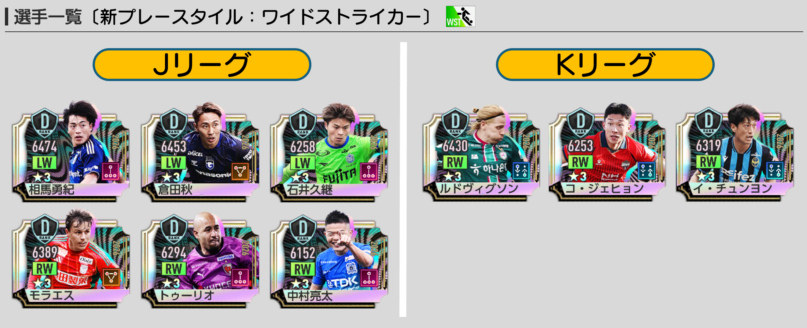
| リーグ | 選手 | ポリシー/ポジション | プレイスタイル | 初期/最大 | 所持スキル | 所持特徴 | 補足 |
|---|---|---|---|---|---|---|---|
| J | 相馬勇紀 | カウンター / LW | ワイドストライカー | 6267 / 14628 | 切り裂くドリブル | 俊敏なキッカー | ワイドストライカー枠。左右サイドのフォメコン条件用に確認。 |
| J | 倉田秋 | ポゼッション / LW | ワイドストライカー | 6156 / 14648 | 切り裂くドリブル | 冷静な突破 | ワイドストライカー枠。左右サイドのフォメコン条件用に確認。 |
| J | 石井久継 | カウンター / LW | ワイドストライカー | 5960 / 14444 | 切り裂くドリブル | 俊敏なドリブラー | ワイドストライカー枠。左右サイドのフォメコン条件用に確認。 |
| J | マルコ・トゥーリオ | カウンター / RW | ワイドストライカー | 6113 / 14452 | テクニカルドリブル | ムービングターゲット | ワイドストライカー枠。左右サイドのフォメコン条件用に確認。 |
| J | 中村亮太 | カウンター / RW | ワイドストライカー | 5893 / 14331 | テクニカルドリブル | 俊敏なドリブラー | ワイドストライカー枠。左右サイドのフォメコン条件用に確認。 |
| J | マテウス・モラエス | ポゼッション / RW | ワイドストライカー | 6131 / 14574 | 切り裂くドリブル | ターゲットマン | ワイドストライカー枠。左右サイドのフォメコン条件用に確認。 |
| K | グスタフ・ルドヴィグソン | リアクション / RW | ワイドストライカー | 6165 / 14600 | 切り裂くドリブル | ランニングキッカー | Kリーグ側のワイドストライカー候補。RWに寄っている点に注意。 |
| K | コ・ジェヒョン | リアクション / RW | ワイドストライカー | 6046 / 14406 | 切り裂くドリブル | 保持するキッカー | Kリーグ側のワイドストライカー候補。RWに寄っている点に注意。 |
| K | イ・チュンヨン | リアクション / RW | ワイドストライカー | 6074 / 14499 | 疾走のトラップ | 冷静なボールタッチ | Kリーグ側のワイドストライカー候補。RWに寄っている点に注意。 |
クリエイティブFB
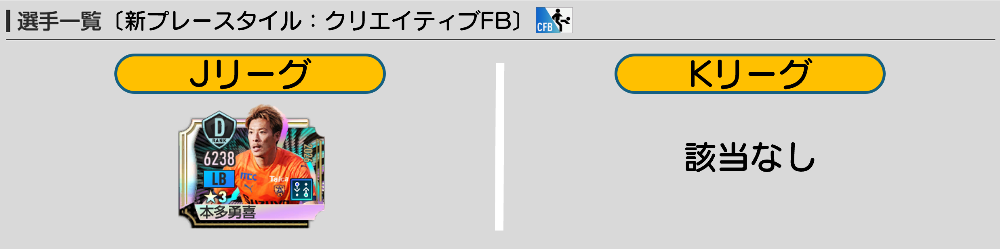
| リーグ | 選手 | ポリシー/ポジション | プレイスタイル | 初期/最大 | 所持スキル | 所持特徴 | 補足 |
|---|---|---|---|---|---|---|---|
| J | 本多勇喜 | リアクション / LB | クリエイティブFB | 6060 / 14399 | コントロールフィード | 長短のキック | 現状かなり貴重なクリエイティブFB。リアクションLB補強候補。 |
| K | 該当なし | - | - | - | - | - | Kリーグ側は該当なし。 |
スプリントCB
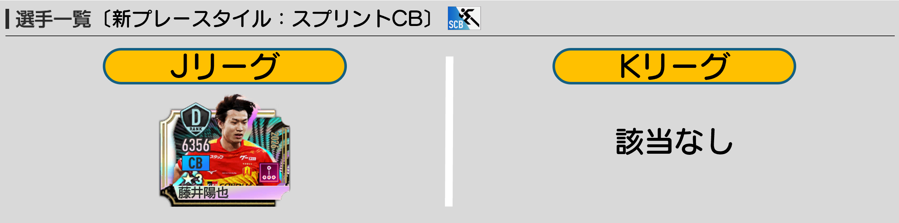
| リーグ | 選手 | ポリシー/ポジション | プレイスタイル | 初期/最大 | 所持スキル | 所持特徴 | 補足 |
|---|---|---|---|---|---|---|---|
| J | 藤井陽也 | カウンター / CB | スプリントCB | 6059 / 14598 | 冴え渡るインターセプト | インターセプター | スプリントCB枠。将来のフォメコン条件化も見据えてチェック。 |
| K | 該当なし | - | - | - | - | - | Kリーグ側は該当なし。 |
金フォメコン別おすすめ選手
ここからは、金フォーメーションコンボの条件を満たせる選手をポリシー別に整理します。該当なしも重要な情報です。狙っているフォメコンに該当選手がいない場合、そのガチャでは不足枠を埋められません。
カウンター金フォメコン
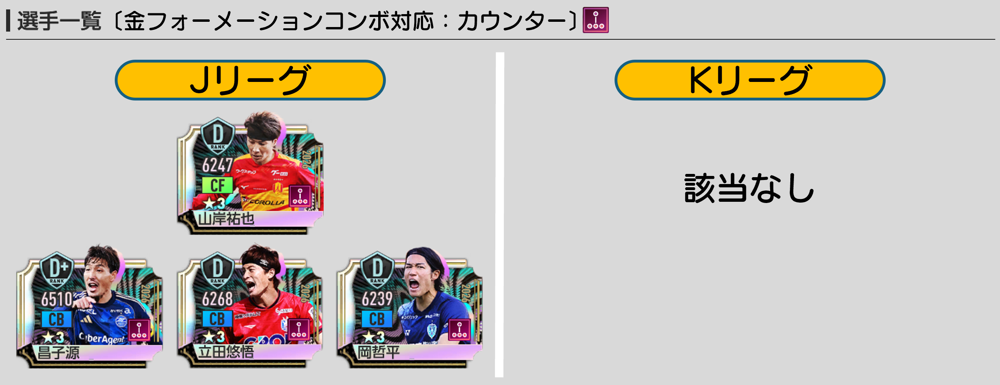
| フォメコン | 選手 | ポリシー/ポジション | プレイスタイル | 初期/最大 | 所持スキル | 所持特徴 | 補足 |
|---|---|---|---|---|---|---|---|
| レ・ブルー'98 | 該当なし | - | - | - | - | - | このガチャ内では補強不可。 |
| ディアボロ・ディ・ミラノ'99 | 昌子源 | カウンター / CB | 組立CB | 6174 / 14750 | 鋭角的なタックル | ハードタックラー | Jリーグ対象。条件一致枠として候補。 |
| リーベル'18 | 該当なし | - | - | - | - | - | このガチャ内では補強不可。 |
| エウスカルドゥナク'12 | 立田悠悟 | カウンター / CB | ストッパー | 6016 / 14524 | 鋭角的なタックル | ハードタックラー | Jリーグ対象。条件一致枠として候補。 |
| エウスカルドゥナク'12 | 岡哲平 | カウンター / CB | ストッパー | 5955 / 14501 | 鋭角的なタックル | エアバトラー | Jリーグ対象。条件一致枠として候補。 |
| エウスカルドゥナク'12 | 山岸祐也 | カウンター / CF | ストライカー | 6014 / 14458 | 絶妙なトラップ | ゴール前の落ち着き | Jリーグ対象。条件一致枠として候補。 |
ムービング金フォメコン
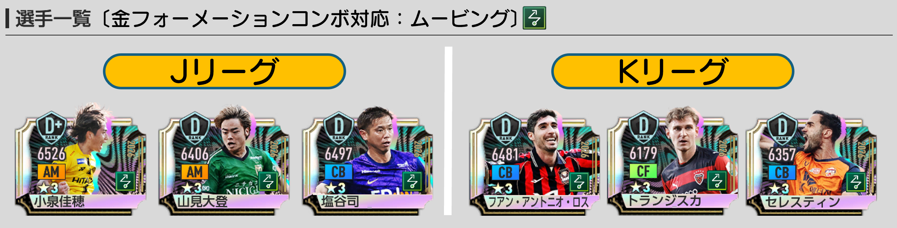
| フォメコン | 選手 | ポリシー/ポジション | プレイスタイル | 初期/最大 | 所持スキル | 所持特徴 | 補足 |
|---|---|---|---|---|---|---|---|
| ソベラーノ'94 | 小泉佳穂 | ムービング / AM | パサー | 6232 / 14676 | 操舵のパス | 不屈のパサー | Jリーグ対象。条件一致枠として候補。 |
| ソベラーノ'94 | 山見大登 | ムービング / AM | アタッカー | 6199 / 14481 | 強引な中央突破 | すり抜けるロングパサー | Jリーグ対象。条件一致枠として候補。 |
| アルビセレステ'01 | 塩谷司 | ムービング / CB | 組立CB | 6174 / 14754 | 反撃のパスカット | インターセプター | Jリーグ対象。条件一致枠として候補。 |
| アルビセレステ'01 | フアン・アントニオ・ロス | ムービング / CB | 組立CB | 6145 / 14731 | 奮戦のパスカット | 上空の寸断者 | Kリーグ対象。条件一致枠として候補。 |
| カナリア軍団'06 | ヤコブ・トランジスカ | ムービング / CF | ストライカー | 5934 / 14385 | 狙いすましたシュート | ランニングジャンパー | Kリーグ対象。条件一致枠として候補。 |
| カナリア軍団'06 | ジュリアン・セレスティン | ムービング / CB | ストッパー | 6021 / 14629 | 冴え渡るインターセプト | 上空の寸断者 | Kリーグ対象。条件一致枠として候補。 |
| ネラッズーロ'10 | 該当なし | - | - | - | - | - | このガチャ内では補強不可。 |
リアクション金フォメコン
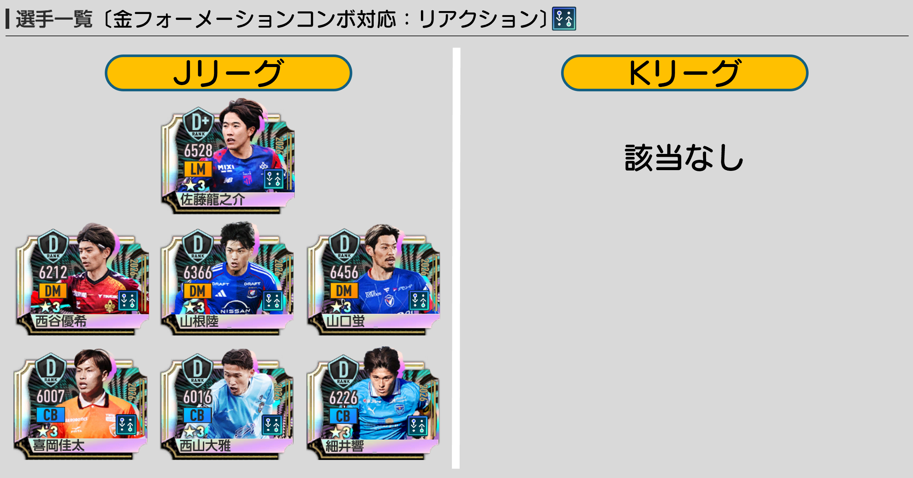
| フォメコン | 選手 | ポリシー/ポジション | プレイスタイル | 初期/最大 | 所持スキル | 所持特徴 | 補足 |
|---|---|---|---|---|---|---|---|
| ゴーデンゾーネン'95 | 喜岡佳太 | リアクション / CB | ストッパー | 5723 / 14269 | ダイナミックタックル | エアバトラー | Jリーグ対象。条件一致枠として候補。 |
| ゴーデンゾーネン'95 | 西山大雅 | リアクション / CB | ストッパー | 5680 / 14279 | 冴え渡るインターセプト | ハイタワーの天敵 | Jリーグ対象。条件一致枠として候補。 |
| ゴーデンゾーネン'95 | 山口蛍 | リアクション / DM | ハードマーカー | 6256 / 14625 | 冴え渡るインターセプト | エンドレスマーカー | Jリーグ対象。条件一致枠として候補。 |
| ゴーデンゾーネン'95 | 西谷優希 | リアクション / DM | ハードマーカー | 5901 / 14389 | 奮戦のタックル | 反撃のパサー | Jリーグ対象。条件一致枠として候補。 |
| セレソン・ダス・キナス'16 | 佐藤龍之介 | リアクション / LM | サイドアタッカー | 6198 / 14738 | 切り裂くドリブル | スピードドリブラー | Jリーグ対象。条件一致枠として候補。 |
| エンカルナードス'23 | 細井響 | リアクション / CB | 組立CB | 6903 / 14470 | 奮戦のタックル | リスクヘッジロングパサー | Jリーグ対象。条件一致枠として候補。 |
| エンカルナードス'23 | 山根陸 | リアクション / DM | セントラルMF | 6068 / 14509 | 奮戦のパスカット | マラソンマン | Jリーグ対象。条件一致枠として候補。 |
| アルヴィネグロ・プライアーノ'11 | 該当なし | - | - | - | - | - | このガチャ内では補強不可。 |
ポゼッション金フォメコン
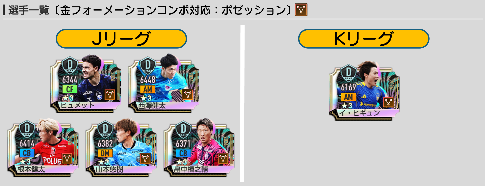
| フォメコン | 選手 | ポリシー/ポジション | プレイスタイル | 初期/最大 | 所持スキル | 所持特徴 | 補足 |
|---|---|---|---|---|---|---|---|
| ラ・デア'22 | 該当なし | - | - | - | - | - | このガチャ内では補強不可。 |
| ラ・ロハ'24 | 山本悠樹 | ポゼッション / DM | パサー | 6195 / 14536 | 意外性のあるミドルパス | シルクタッチ | Jリーグ対象。条件一致枠として候補。 |
| ロス・カフェテロス'94 | デニス・ヒュメット | ポゼッション / CF | ストライカー | 6117 / 14561 | 点で合わせるシュート | シュートセンス | Jリーグ対象。条件一致枠として候補。 |
| ブラウ・グラーナ'15 | 根本健太 | ポゼッション / CB | 組立CB | 6078 / 14664 | 奮戦のパスカット | ストロングマーカー | Jリーグ対象。条件一致枠として候補。 |
| ブラウ・グラーナ'15 | 畠中槙之輔 | ポゼッション / CB | 組立CB | 6157 / 14580 | 鋭角的なタックル | ピッチの掃除屋 | Jリーグ対象。条件一致枠として候補。 |
| ブラウ・グラーナ'15 | 西澤健太 | ポゼッション / AM | セントラルMF | 6151 / 14590 | 安定したパスワーク | 絶え間ないボールタッチ | Jリーグ対象。条件一致枠として候補。 |
| ブラウ・グラーナ'15 | イ・ヒギュン | ポゼッション / AM | セントラルMF | 5988 / 14271 | 操舵のパス | 走り切るロングパサー | Kリーグ対象。条件一致枠として候補。 |
ポジション別Best11
最後に、ポジション別の初期総合力Best11と最大強化総合力Best11です。フォメコン適性とは別軸で、単純な能力値の確認に使えます。
初期総合力Best11
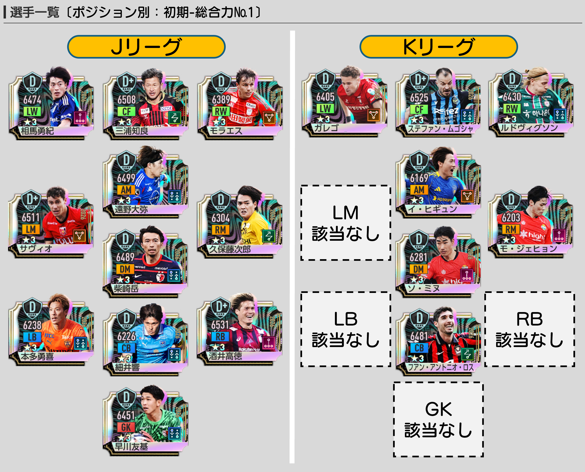
JリーグSP：初期総合力Best11
| ポジション | 選手 | ポリシー | プレイスタイル | 初期総合力 | 最大強化 | 所持スキル | 所持特徴 | 補足 |
|---|---|---|---|---|---|---|---|---|
| CF | 三浦知良 | ムービング | ラインブレーカー | 6198 | 14695 | 狙いすましたシュート | キングの舞 | 初期総合力Best11 |
| LW | 相馬勇紀 | カウンター | ワイドストライカー | 6267 | 14628 | 切り裂くドリブル | 俊敏なキッカー | 初期総合力Best11 |
| RW | マテウス・モラエス | ポゼッション | ワイドストライカー | 6131 | 14574 | 切り裂くドリブル | ターゲットマン | 初期総合力Best11 |
| AM | 遠野大弥 | リアクション | アタッカー | 6234 | 14597 | 強引な中央突破 | アジャイルターゲット | 初期総合力Best11 |
| LM | マテウス・サヴィオ | ポゼッション | サイドアタッカー | 6207 | 14715 | 切り裂くドリブル | スピードドリブラー | 初期総合力Best11 |
| RM | 久保藤次郎 | ムービング | ドリブラー | 6132 | 14496 | テクニカルドリブル | マラソンマン | 初期総合力Best11 |
| DM | 柴崎岳 | リアクション | パサー | 6256 | 14651 | 楔のパス | シルクタッチ | 初期総合力Best11 |
| CB | 細井響 | リアクション | 組立CB | 6903 | 14470 | 奮戦のタックル | リスクヘッジロングパサー | 初期総合力Best11 |
| LB | 本多勇喜 | リアクション | クリエイティブFB | 6060 | 14399 | コントロールフィード | 長短のキック | 初期総合力Best11 |
| RB | 酒井高徳 | カウンター | 守備的SB | 6220 | 14775 | 反撃のパスカット | エンドレスマーカー | 初期総合力Best11 |
| GK | 早川友基 | リアクション | オーソドックスGK | 6154 | 14746 | 驚異的なセービング | 上空の守護神 | 初期総合力Best11 |
KリーグSP：初期総合力Best11
| ポジション | 選手 | ポリシー | プレイスタイル | 初期総合力 | 最大強化 | 所持スキル | 所持特徴 | 補足 |
|---|---|---|---|---|---|---|---|---|
| CF | ステファン・ムゴシャ | リアクション | ストライカー | 6189 | 14764 | 点で合わせるシュート | シュートセンス | 初期総合力Best11 |
| LW | ガレゴ | ポゼッション | ドリブラー | 6030 | 14651 | 切り裂くドリブル | アジャイルターゲット | 初期総合力Best11 |
| RW | グスタフ・ルドヴィグソン | リアクション | ワイドストライカー | 6165 | 14600 | 切り裂くドリブル | ランニングキッカー | 初期総合力Best11 |
| AM | イ・ヒギュン | ポゼッション | セントラルMF | 5988 | 14271 | 操舵のパス | 走り切るロングパサー | 初期総合力Best11 |
| LM | 該当なし | - | - | - | - | - | - | 対象選手なし |
| RM | モ・ジェヒョン | カウンター | ドリブラー | 5977 | 14403 | 高速クロス | 俊敏なパサー | 初期総合力Best11 |
| DM | ソ・ミヌ | カウンター | セントラルMF | 6113 | 14400 | 奮戦のパスカット | 決めきる力 | 初期総合力Best11 |
| CB | フアン・アントニオ・ロス | ムービング | 組立CB | 6145 | 14731 | 奮戦のパスカット | 上空の寸断者 | 初期総合力Best11 |
| LB | 該当なし | - | - | - | - | - | - | 対象選手なし |
| RB | 該当なし | - | - | - | - | - | - | 対象選手なし |
| GK | 該当なし | - | - | - | - | - | - | 対象選手なし |
最大強化総合力Best11
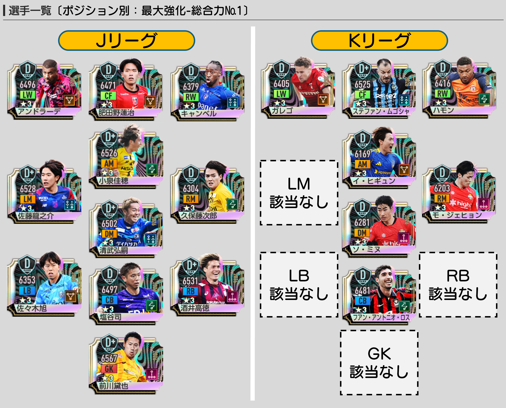
JリーグSP：最大強化総合力Best11
| ポジション | 選手 | ポリシー | プレイスタイル | 初期総合力 | 最大強化 | 所持スキル | 所持特徴 | 補足 |
|---|---|---|---|---|---|---|---|---|
| CF | 肥田野蓮治 | ポゼッション | ラインブレーカー | 6122 | 14699 | 点で合わせるシュート | ゴール前の嗅覚 | 最大強化総合力Best11 |
| LW | チアゴ・アンドラーデ | ポゼッション | ドリブラー | 6121 | 14747 | テクニカルドリブル | 失わないドリブラー | 最大強化総合力Best11 |
| RW | ノーマン・キャンベル | リアクション | サイドアタッカー | 6082 | 14585 | 切り裂くドリブル | スピードランナー | 最大強化総合力Best11 |
| AM | 小泉佳穂 | ムービング | パサー | 6232 | 14676 | 操舵のパス | 不屈のパサー | 最大強化総合力Best11 |
| LM | 佐藤龍之介 | リアクション | サイドアタッカー | 6198 | 14738 | 切り裂くドリブル | スピードドリブラー | 最大強化総合力Best11 |
| RM | 久保藤次郎 | ムービング | ドリブラー | 6132 | 14496 | テクニカルドリブル | マラソンマン | 最大強化総合力Best11 |
| DM | 清武弘嗣 | リアクション | パサー | 6176 | 14690 | ファストフィード | 高性能ロングパサー | 最大強化総合力Best11 |
| CB | 塩谷司 | ムービング | 組立CB | 6174 | 14754 | 反撃のパスカット | インターセプター | 最大強化総合力Best11 |
| LB | 佐々木旭 | ポゼッション | 守備的SB | 6056 | 14592 | 鋭角的なタックル | スピードクラッシャー | 最大強化総合力Best11 |
| RB | 酒井高徳 | カウンター | 守備的SB | 6220 | 14775 | 反撃のパスカット | エンドレスマーカー | 最大強化総合力Best11 |
| GK | 前川黛也 | カウンター | オーソドックスGK | 6134 | 14895 | 驚異的なセービング | 広域の守護神 | 最大強化総合力Best11 |
KリーグSP：最大強化総合力Best11
| ポジション | 選手 | ポリシー | プレイスタイル | 初期総合力 | 最大強化 | 所持スキル | 所持特徴 | 補足 |
|---|---|---|---|---|---|---|---|---|
| CF | ステファン・ムゴシャ | リアクション | ストライカー | 6189 | 14764 | 点で合わせるシュート | シュートセンス | 最大強化総合力Best11 |
| LW | ガレゴ | ポゼッション | ドリブラー | 6030 | 14651 | 切り裂くドリブル | アジャイルターゲット | 最大強化総合力Best11 |
| RW | エメルソン・ハモン | ムービング | ドリブラー | 6041 | 14663 | テクニカルドリブル | 俊敏なドリブラー | 最大強化総合力Best11 |
| AM | イ・ヒギュン | ポゼッション | セントラルMF | 5988 | 14271 | 操舵のパス | 走り切るロングパサー | 最大強化総合力Best11 |
| LM | 該当なし | - | - | - | - | - | - | 対象選手なし |
| RM | モ・ジェヒョン | カウンター | ドリブラー | 5977 | 14403 | 高速クロス | 俊敏なパサー | 最大強化総合力Best11 |
| DM | ソ・ミヌ | カウンター | セントラルMF | 6113 | 14400 | 奮戦のパスカット | 決めきる力 | 最大強化総合力Best11 |
| CB | フアン・アントニオ・ロス | ムービング | 組立CB | 6145 | 14731 | 奮戦のパスカット | 上空の寸断者 | 最大強化総合力Best11 |
| LB | 該当なし | - | - | - | - | - | - | 対象選手なし |
| RB | 該当なし | - | - | - | - | - | - | 対象選手なし |
| GK | 該当なし | - | - | - | - | - | - | 対象選手なし |
今回のおすすめBEST5
総合力ランキングではなく、代用のしにくさ、フォメコンへの絡み方、今後の価値を基準に選ぶなら、個人的には以下の5名を優先してチェックしたいです。
福田心之助唯一スキル「打開のドリブル」。カウンターRBの注目株。
相馬勇紀唯一特徴＋ワイドストライカー。左サイド補強として魅力。
細井響唯一特徴＋エンカルナードス'23適性。リアクションCB候補。
本多勇喜唯一クリエイティブFB。特徴も唯一で将来性あり。
ヤコブ・トランジスカKリーグ側の注目枠。唯一特徴＋カナリア軍団'06適性。
目的別に見るならこの選手
- 唯一性能を重視：福田心之助、相馬勇紀、細井響、本多勇喜、ヤコブ・トランジスカ
- カウンター強化：昌子源、立田悠悟、岡哲平、山岸祐也
- ムービング強化：小泉佳穂、山見大登、塩谷司、フアン・アントニオ・ロス、ヤコブ・トランジスカ、ジュリアン・セレスティン
- リアクション強化：細井響、山根陸、喜岡佳太、西山大雅、山口蛍、西谷優希
- ポゼッション強化：山本悠樹、デニス・ヒュメット、根本健太、畠中槙之輔、西澤健太、イ・ヒギュン
まとめ
第二弾JリーグSP・KリーグSPは、単純に「有名選手を引く」よりも、自分の使っているポリシーと金フォメコンに合う選手を狙うのが大事です。
Jリーグ側は対象選手が100名と多く、唯一スキル、唯一特徴、新プレイスタイル、金フォメコン適性のどれを重視するかで候補が変わります。迷ったら、まずは福田心之助、相馬勇紀、細井響、本多勇喜あたりを優先的に確認するのがおすすめです。
Kリーグ側は人数が少ないぶん、狙いは絞りやすいです。特にヤコブ・トランジスカ、ジュリアン・セレスティン、イ・ヒギュンは、フォメコン目的で見ると価値があります。
選手評価ツールも活用しよう
各選手のポジション別順位、ポリシー別順位、プレイスタイル別順位、対応フォーメーションコンボを詳しく確認したい場合は、サイト内の「選手評価ツール」もおすすめです。記事内の評価とあわせて、自分の手持ちや使いたいフォメコンに合うかチェックしてみてください。